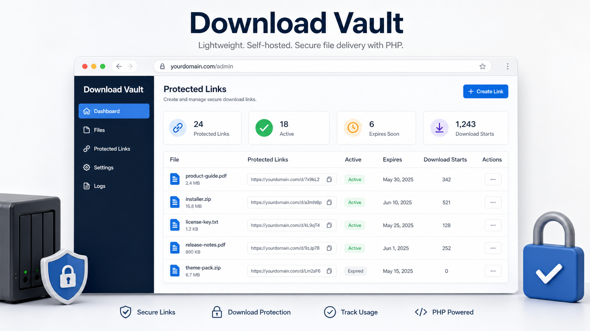

Download Vault
A polished, database-free PHP application for delivering private files through controlled, trackable download links.
- Password-protected links
- Expiration dates and max download limits
- Clean URLs with fallback routing
- Upload and FTP import workflows
- Recent history, daily stats, and backups
- No SQL database, Composer, Node.js, or cloud account
